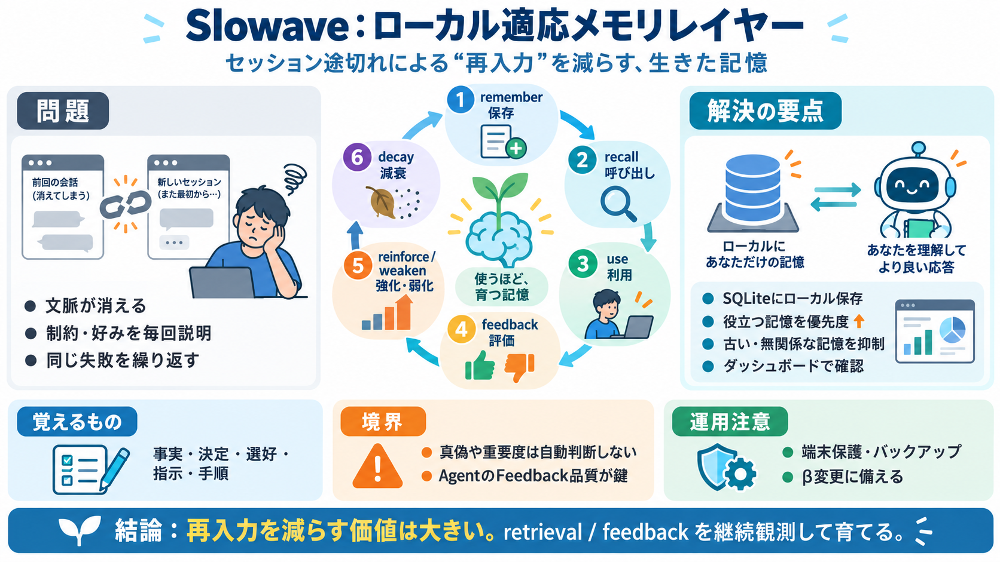

AI Agent Memory: Architecture & State Decay
Wu et al. (arXiv 2026) propose a different architecture: a dedicated memory agent running alongside the action agent, up…

Wu et al. (arXiv 2026) propose a different architecture: a dedicated memory agent running alongside the action agent, up…
Almost there! Check your inbox to confirm your subscription. Twitter GitHub Linkedin © 2026 SQLite Cloud, Inc. All…
We propose a novel architecture based on confidential computing, leveraging hardware-level Trusted Execution Environment…
``` memory/ ├── MEMORY.md ← evergreen - permanent facts, always surfaces ├── architecture.md ← evergreen - stack decisio…
In-Memory Store: Fast and lightweight; ideal for testing and short-term use. Data is lost when the system restarts. Loc…